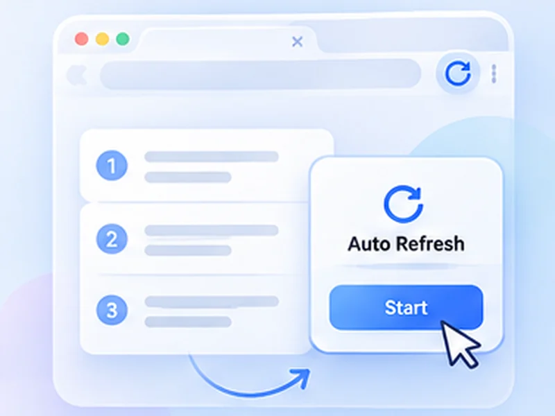

Answers to the things people search for.
Clear instructions for refreshing pages automatically, forcing a hard reload, and choosing a refresh extension.

All guides
Each one is written to be followed in a couple of minutes.
How to auto refresh a page
No major browser has an auto refresh button.
Read the guideHow to hard refresh
A hard refresh reloads a page and ignores the copies your browser saved.
Read the guideHow to stop auto refresh
A page that reloads by itself is usually caused by one of four things.
Read the guideEasy Auto Refresh alternative
Easy Auto Refresh is a long-standing refresh extension with a free tier and paid extras.
Read the guideAuto Refresh Plus alternative
Auto Refresh Plus is the largest refresh extension, with a very deep feature set.
Read the guideWritten to be useful with or without the extension
These guides explain the built-in browser options first, then show where an extension saves time. Use whichever fits.
Questions, answered.
What can Free Auto Refresh do?
It reloads a tab on a fixed or random timer, watches the page for text or content changes, alerts you on a match, and stops on a time or count limit.
Do I need an account or a paid plan?
No. Everything is free and works without signing up.
Can I combine several guides?
Yes. A timer, a watch rule, limits and smart pause all work together on the same tab.
Does it work in Firefox as well as Chrome?
Yes. Both browsers get the same features.
Prefer it done for you?
Free Auto Refresh reloads on a timer. Free for Chrome and Firefox.
Need a guide that is not here?
Tell us what you were trying to do.